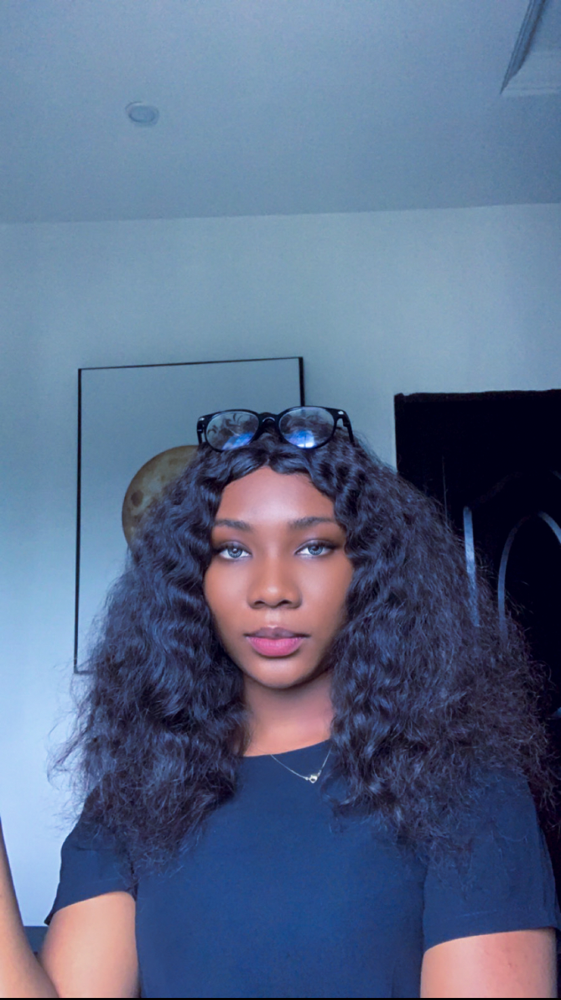

Joy Akabunwa

Summary
Front end Developer, Ui/Ux designer, Customer service Representative
Experience
Customer Service Representative-Octra Market
Lagos,Lagos State, May2021- November2022
- Contacted carrier representatives to make arrangements or issue instructions for shipping and delivery of materials.
- Processed orders and detailed transaction information to customers.
- Provide exceptional customer service to ensure customer satisfaction.
- Referred unresolved customer grievances to designated departments for further investigation.
- Followed up with customers regarding product functionality and overall satisfaction.
Customer Service Representative-Sub consulting
Lagos,Lagos state, January2020-March 2021
- Collaborated with team members in an office environment to create brand designs and images for advertisements.
- Providing feedback from customers to the company.
- Used coordination and planning skills to achieve results according to schedule.
- Created spreadsheets using Microsoft Excel for daily, weekly,and monthly reporting.
- Communicating effectively with clients via telephone or physical appearance.
Customer Support Representative-Sub Consulting
Lagos, Lagos State, July2017-October2017
- Collaborated with internal teams to gather information and resolve customer issues.
- I modofied and customized commercial programs for internal needs.
- Maintained phone and web queue availability to meet service standards.
Education
Bachelor Of Science(B.S.) In Mass Communication And Journalism
Caleb university, Lagos
Lagos, Oct 2015-Oct 2019
Skills
- Customer Relations
- Front end web development
- Ui Ux Figma Design
- Mockups and Prototype
- Client satisfaction
Others
Contact me
My hobbies